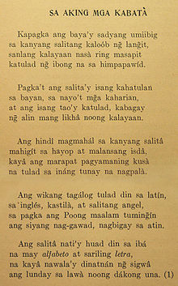
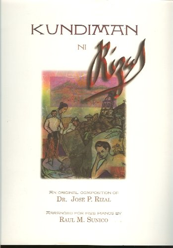

.
Works of Rizal
Noli Me Tangere
El Filibusterismo

Makamisa

Sa Aking mga Kababata

Mi Último Adiós

The Friars & Filipinos (Unfinished)
The Diaries of José Rizal
"Come se gobiernan las Filipinas"
(Governing the Philippine islands)
(Governing the Philippine islands)
The Philippines a Century Hence
La Indolencia de los Filipinos
Sa Mga Kababaihang Taga Malolos

Sucesos de las Islas Filipinas

Triumph
A La Juventud Filipina
Kundiman

A Man in Dapitan